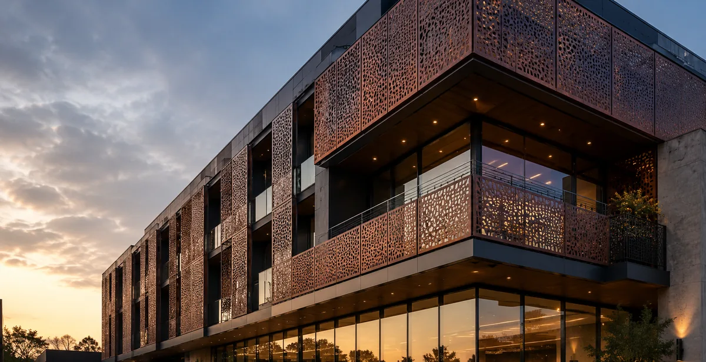
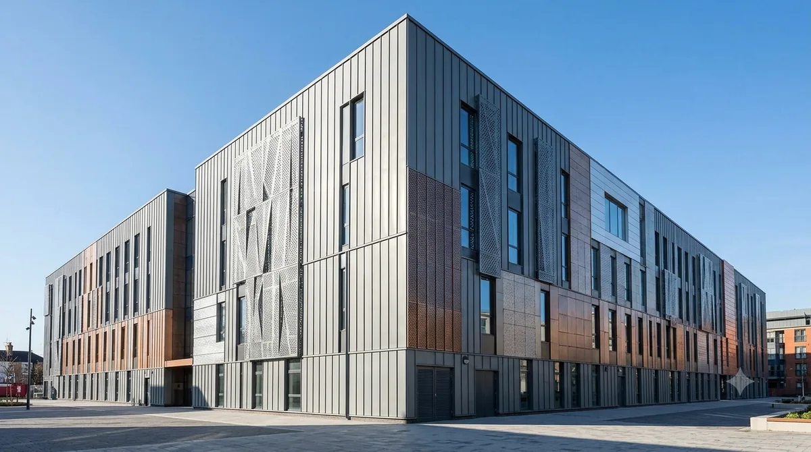

B.02·1From our current range
Perforated Balcony Screen System
Request this design as shown, or specify your own dimensions and finish.

Facade & Cladding · custom fabricationB.02Weathering-steel and perforated envelope systems that define a building's exterior while managing light, shadow and airflow.
A facade is the first thing anyone reads about a building. Our cladding systems give architects a durable, expressive envelope in Corten or aluminum — solid, perforated or layered — coordinated to your setting-out grid and detailed with concealed fixings. Perforated screens moderate solar gain and give privacy to glazing behind; solid weathering-steel panels age into a warm, maintenance-free skin. Every panel is shop-drawn and engineered before a sheet is cut.
| Primary material | Corten Steel |
| Also available | Aluminum |
| Finish | Weathering patina / powder-coat |
| System | Rainscreen / direct-fix |
| Engineering | Per elevation & load case |
| Lead time | Confirmed per quote |
A sample of what we've built recently in this system. Every design shown is available as-is or as a starting point for your own — request the one you like and we'll quote it to your dimensions and finish.

B.02·1Request this design as shown, or specify your own dimensions and finish.
 B.02·2
B.02·2Request this design as shown, or specify your own dimensions and finish.
Request this design as shown, or specify your own dimensions and finish.
Both, and frequently in the same elevation. Solid panels give a continuous weathered plane, while perforated panels manage solar gain, screen balconies and let interior light read through at night. The mix is set by the elevation study.
Corten weathering steel for a warm, self-protecting envelope that needs no painting, and aluminum where weight, large spans or a specific color matter. Aluminum is roughly a third the weight of steel and takes powder-coat or anodized finishes across the spectrum.
Through a concealed sub-frame with hidden fixings, set out to coordinate with your grid. Nothing reads on the face of the panel. We shop-draw the sub-frame and engineer the connections before anything is cut.
Yes — most facade work begins with the architect’s elevations and details. We review the set, advise on panel sizing, joint widths and material, then issue shop drawings for approval prior to fabrication.
The patina develops over the first months and then stabilizes into a dense, protective layer that requires no painting and effectively no maintenance. Color deepens with exposure, so orientation and shelter will produce subtle variation across an elevation — usually a desirable effect.
We fabricate, deliver and support. On most projects the main contractor installs, and we provide shop drawings, setting-out information and installation guidance so it lands correctly on site.

Send the drawing or a description — we'll respond with options, feasibility and a quote.